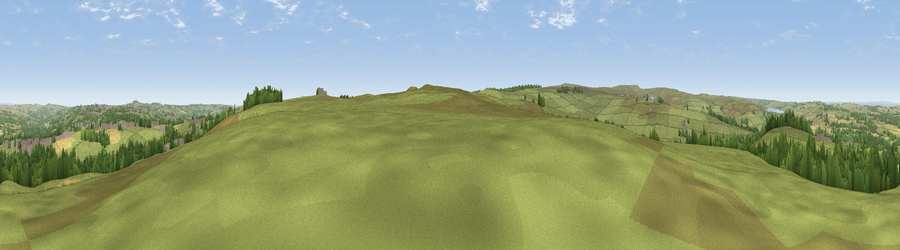

Viewpoint near Castleside
#16095 in England · top 37% of its area beats it · near Castleside · open accessWhere it is
The exact computed spot (NZ 07475 47375). Click the marker for map links.
Public access: this spot lies on mapped open-access land (CRoW Act 2000) — you may roam here on foot. Computed from Natural England's CRoW access layer and OpenStreetMap rights of way — not the legal definitive map. Always verify locally.
The view, rendered

A 360° render of this exact spot computed from the terrain model, tree cover and land cover — summer colours, afternoon light, calibrated against photographs of famous viewpoints. Real trees, hedges and buildings will differ in detail.
The panorama
Grey silhouette: terrain skyline in each direction (720 bearings, Earth curvature and refraction included). Dashed green: skyline with trees (+15 m) and buildings (+8 m) as obstacles. Blue strip: how far the ground is visible on each bearing.
Where the view opens
Wedge length = distance to the farthest visible ground on that bearing (vegetation-aware). Rings at 10, 25 and 50 km.
What fills the view
74% grassland · 14% woodland · 9% cropland · 3% built-up
Angular shares of the visible panorama (visual magnitude), not map area. Landscape diversity 0.36 (0–1 Shannon).
Key numbers
More beautiful places nearby
The staircase of upgrades: each row has a higher view potential than everything closer. Driving times are estimates from straight-line distance, calibrated against real road routing — check an actual route before setting out.
| Place | Direction | Drive | Score |
|---|---|---|---|
| Viewpoint near Benfieldside | NNE · 6 km | ~13 min | 57.0 |
| Harehope Hill | W · 7 km | ~14 min | 62.0 |
| Viewpoint near Edmundbyers | W · 7 km | ~14 min | 65.0 |
| Collier Law | SW · 8 km | ~16 min | 71.7 |
| Pontop Pike | NE · 9 km | ~18 min | 77.8 |
| Little Dun Fell | WSW · 40 km | ~59 min | 78.4 |
| Cross Fell | WSW · 41 km | ~60 min | 78.7 |
| Viewpoint near Rothbury | N · 51 km | ~73 min | 81.1 |
54.82117, -1.88519 · source: screening · position refined by local search. Computed location — check access rights before visiting.